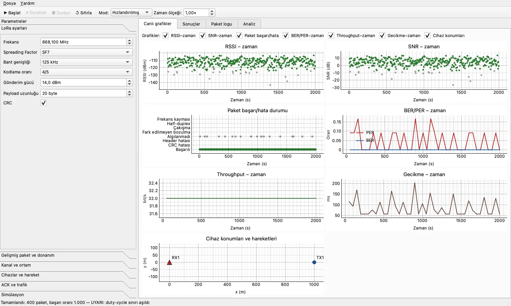
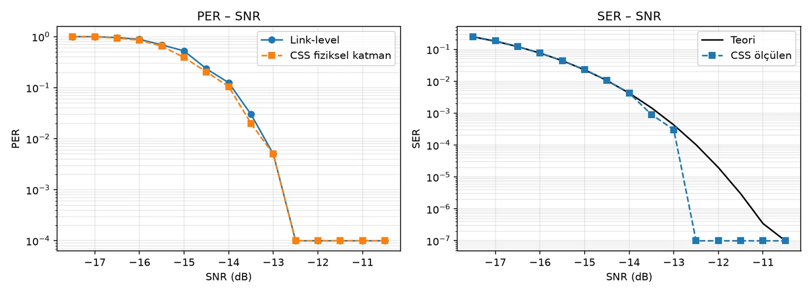
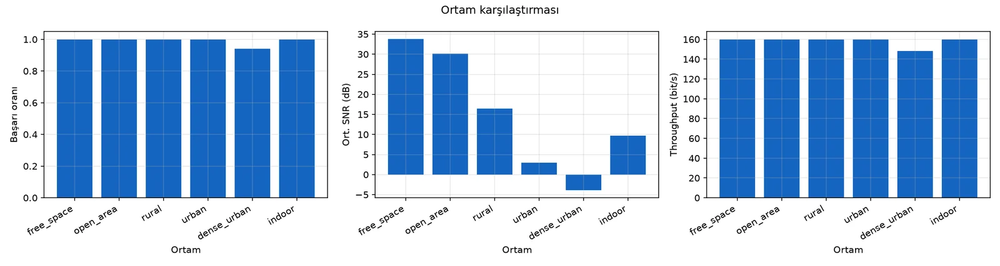

Proje 01 · 2026
LoRaSim: SX1276 LoRa Haberleşme Simülatörü
SX1276 tabanlı LoRa vericiler ve alıcılar arasındaki haberleşme kalitesini; kanal, mesafe, hareket ve trafik koşulları altında inceleyen simülatör.
01.1Özet
Bir LoRa bağlantısının sahada ne kadar iyi çalışacağı; spreading factor, bant genişliği, gönderim gücü, mesafe, ortam ve ağdaki diğer cihazlar gibi birçok etkene bağlı. Her kombinasyonu donanımla denemek zaman alıyor, bazı durumları (hareketli cihazlar, yoğun trafik, girişim) tekrarlanabilir biçimde kurmak ise neredeyse imkânsız.
LoRaSim bu soruları bilgisayarda yanıtlamak için yazdığım bir simülatör. SX1276 modülünün parametreleriyle çalışıyor; vericileri, kanalı ve alıcıları ayrık olay tabanlı bir motorda modelliyor, sonuçları canlı grafiklerle gösteriyor ve CSV, JSON, PNG ya da PDF rapor olarak kaydediyor. Grafik arayüzün yanında aynı motoru kullanan bir komut satırı arayüzü de var.


01.2Mimari
Arayüz ve komut satırı aynı SimConfig nesnesini üretiyor; doğrulama kuralları ve hata mesajları tek yerde. Motor, tüm rastgeleliği tek bir seed'den türetiyor: aynı ayarlar ve aynı seed, arayüzde de komut satırında da birebir aynı sonucu veriyor. Arayüzde motor ayrı bir iş parçacığında çalışıyor, kayıtlar 200 ms'de bir ekrana aktarılıyor.
01.3Fiziksel katman modelleri
Simülatörde iki model var ve arayüzden seçilebiliyor:
- Link-level model: dalga şekli üretmeden link bütçesi, yol kaybı, SNR ve hassasiyetten paket kararını veriyor. Sembol hata olasılığı LoRa'nın evreuyumsuz ortogonal modülasyon eşdeğerinden sayısal olarak hesaplanıyor; header ve interleaver blokları, Hamming düzeltmesi ve CRC-16 kontrolü gerçekten uygulanıyor. Çok cihazlı ve uzun simülasyonlar için bu model kullanılıyor.
- CSS fiziksel katman modeli: preamble, sync word, SFD, header ve payload'dan oluşan gerçek chirp dalga şeklini üretiyor, kanal etkilerini sinyale uyguluyor; alıcı frekans kaymasını preamble'dan kestirip düzeltiyor ve dechirp + FFT ile çözüyor. Link-level modelden SF7'de yaklaşık 25, SF12'de yaklaşık 270 kat yavaş.
İki model birbirini doğrulamak için kullanıldı: aynı SNR noktalarında PER eğrileri örtüşüyor, CSS modelinde ölçülen SER de teorik eğriyi izliyor.


01.4Özellikler
| LoRa ayarları | SF7–SF12; 125 / 250 / 500 kHz; CR 4/5–4/8; güç, frekans (137–1020 MHz), payload, CRC; preamble, implicit header, sync word, IQ inversion, LDRO |
|---|---|
| Ortamlar | Serbest uzay, açık alan, kırsal, kentsel, yoğun kentsel, kapalı alan |
| Kanal | Serbest uzay ve log-distance yol kaybı, AWGN, gölgeleme, Rayleigh/Rician sönümleme, çok yollu yayılım (COST 207, ITU Indoor A), zamana bağlı kanal, Doppler, kristal frekans kayması, harici girişim |
| Çakışmalar | Capture effect: aynı SF'de 6 dB eşiği, farklı SF'ler için SIR eşik matrisi |
| Ağ | Çoklu verici ve alıcı; mesafe, kartezyen veya rastgele yerleşim; half-duplex |
| Hareket | Sabit hız ve yön, rastgele yürüyüş, rota, dairesel |
| Trafik | ACK ve tekrar gönderim, gönderim kuyruğu, duty-cycle kontrolü (uyar / zorla) |
| Ölçümler | BER, SER, PER, paket kaybı, RSSI, SNR, throughput, gecikme, ACK başarısı, duty-cycle ihlali, SX1276 akımlarına göre enerji, başarılı haberleşme mesafesi |
| Analiz | Ortam, mesafe, güç ve SF taramaları; link-level ↔ CSS karşılaştırması |
| Çıktılar | CSV, JSON, PNG, PDF rapor |
01.5Analiz
Analiz sekmesi ve --sweep seçeneği, tek bir parametreyi değiştirip diğerlerini sabit tutarak taramalar yapıyor. Taramanın her noktası aynı seed ile çalıştığı için noktalar arasındaki fark rastgelelikten değil, değiştirilen parametreden geliyor.


python -m lorasim --sweep environment --distance 2000 --png ortam.png
python -m lorasim --max-range 0.9 --env rural --sf 10
python -m lorasim --compare-models --sf 9 --png modeller.png01.6Doğrulama
Projede 270'ten fazla otomatik test var. Testler airtime ve hassasiyet hesaplarını, SER modelinin Monte Carlo ile doğrulanmasını, kanal etkilerini, çoklu cihaz ve çakışma davranışını, ACK ve duty-cycle mantığını, CSS modülasyonunu, uzun süreli çalışmada bellek kararlılığını ve arayüzü kapsıyor. Planda tanımladığım on başarı kriterinin her biri ayrı bir testle sınanıyor. Testler her push'ta GitHub Actions üzerinde Python 3.11 ve 3.12 ile çalışıyor.
01.7Sonuçlar ve öğrenilenler
- Veri sayfasındaki SNR eşikleri, teorik hata modelinden 0,5–2,5 dB daha kötümser. Bu yüzden simülasyonda paket kaybını çoğunlukla hassasiyet eşiği belirliyor; teorik SER eğrisi tek başına iyimser sonuç veriyor.
- Ortam profilleri literatürdeki tipik değerlerden alındı ve sahada ölçülerek kalibre edilmedi. Her değer arayüzden değiştirilebiliyor; gerçek bir kurulum için önce saha ölçümüyle ayarlanmaları gerekiyor.
- İki farklı yaklaşımla yazılmış iki modelin aynı sonucu vermesi, ikisindeki hataları da yakalamanın en etkili yolu oldu.
- CI'da, testler geçtiği hâlde Linux + Python 3.11'de sürecin kapanışta çöktüğü görüldü. Sebebi PySide6 6.12.0'daki bir referans sayımı hatasıydı (
Nonedöndüren her çağrı); bu sürüm bağımlılıklardan dışlandı ve hatayı yakalayan bir test eklendi.
01.8Bağlantılar
- GitHubFatihAksoyEEE/LoRaSim ↗